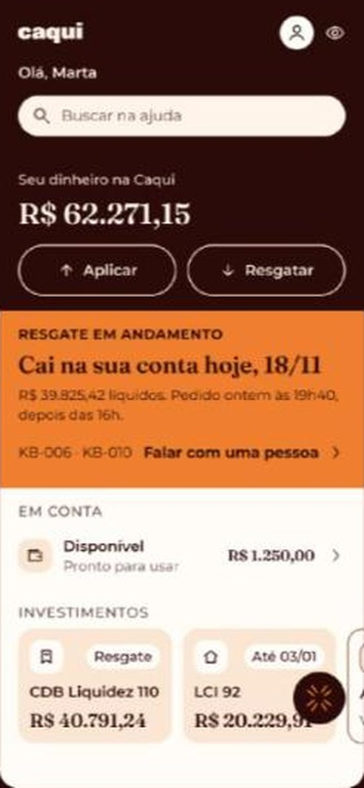
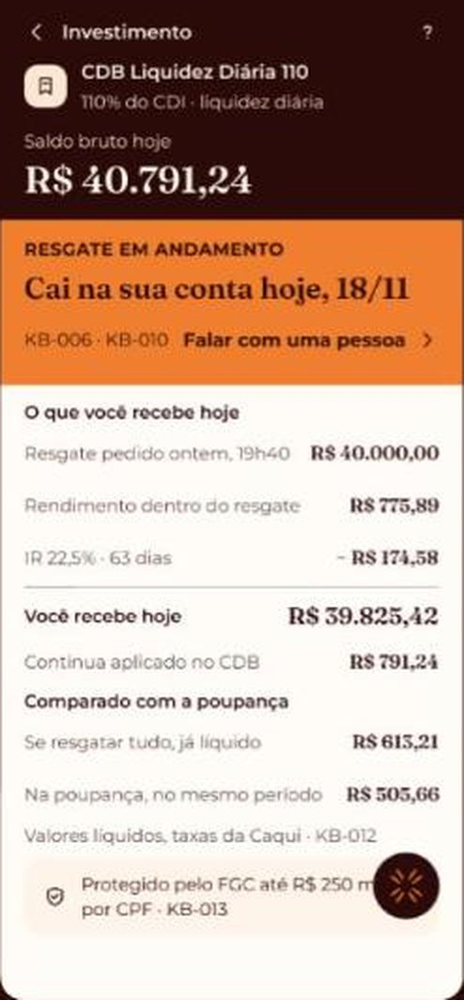
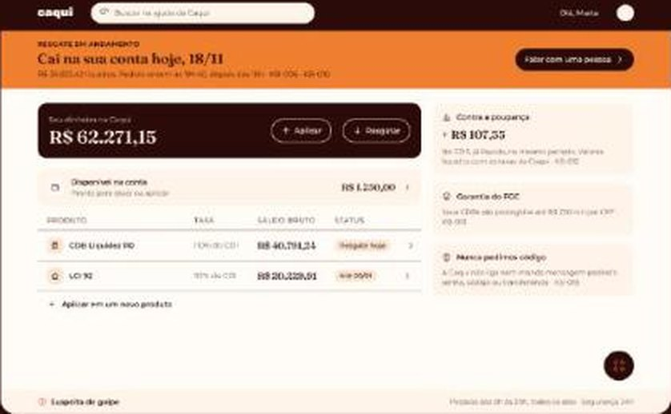
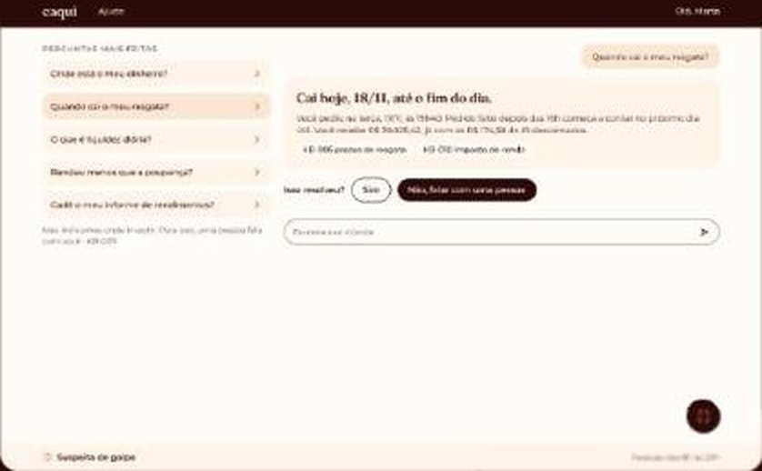

Prazo calculado
A data, com o corte das 16h e o feriado já na conta.
A pergunta central que movimentou o projeto
Hands On com IA da Avenue, 31/10/2026
A semente é o que você planta hoje, o que colhemos amanhã.
Proxima Nova
Na conta linear, 2 milhões de clientes pediriam 310 atendentes. Com 100, dois terços da demanda precisa ser evitada ou resolvida sem humano.
“Resgatei ontem e não caiu. Sumiu?”
É o maior volume, a maior taxa de recontato e o mais fácil de resolver sem humano, porque a resposta já está nos dados da conta.
A data, com o corte das 16h e o feriado já na conta.
Todo número factual mostra o artigo: KB-006, KB-010, KB-012.
O IR aparece nominal: R$ 775,89 de rendimento, R$ 174,58 de imposto.
Visível em qualquer passo. Fora das 8h às 20h, protocolo e prazo.
Quem recebe o caso já vê o histórico e o protocolo.


Tratamos o resgate como total: R$ 40.613,21. Os dados diziam R$ 40.000,00 sobre posição de R$ 40.791,24, é parcial.
O IR é proporcional ao rendimento resgatado. É a armadilha da regra 2.


Paleta, tipografia, raio, ícones e as regras de marca. Página em código, com tokens em JSON para os devs.
caqui.pages.dev/design-systemOs 30 artigos cruzados com 8 arquivos de dados, por script. O que sustenta resposta e o que não sustenta.
8 contradições, 11 ambiguidadesPOST /questions e /batch, CPF mascarado antes de enviar e de logar, artigo vigente sobre o obsoleto.
44 casos, 13 regras30 artigos cruzados por script com 8 arquivos de dados. O KB-006 bateu com as 237 operações que têm liquidação prevista: zero divergência. Os problemas estão fora dele.
KB-019 manda falar com a segurança pelo app. KB-020 bloqueia a sessão em todos os aparelhos. KB-021 exige biometria para voltar. 11 dos 50 clientes preferem telefone, a Dona Marta entre eles.
KB-025 diz “a partir das 8h”. KB-026 diz “até 7 dias corridos”. “Urgente” não é definido em lugar nenhum.
KB-010 não diz se a contagem termina no pedido, no dia-base ou na liquidação. Na borda 180/181 isso muda a alíquota.
7 posições e 15 operações do CDB 110 em clientes diretos, a mais antiga de 20/05/2024, dois anos antes do primeiro cliente da parceria. E 15 aplicações abaixo do mínimo.
“Obedecer ao pedido antigo depois de uma interrupção de segurança é falha de prioridade, não de conteúdo.”
Nenhum dos três apareceu lendo a resposta. Apareceram conferindo contra a fonte: o checker caso a caso, o operacoes.csv e o estilo.css. A correção do IR virou R$ 39.825,42; a da cor subiu o contraste de 4,87:1 para 6,71:1.
| Item | Design system | Telas |
|---|---|---|
| Tipografia | Proxima Nova, Montserrat de reserva | Fraunces nas manchetes, resolvido nesta apresentação |
| Logo | Só na abertura; dentro ficam as sementes | Wordmark em todo header e símbolo no FAB de 17 telas |
| Raio | 14px fixo | Escala 12 / 16 / 20 / total |
| Nome do chat | caquIA | “Ajuda da Caqui” |
| Faixa de status | Cinco estados, com botão de fechar | Quatro estados, sem fechar, falta “recusado” |
A tipografia já foi resolvida: esta apresentação roda no KV do Renan. As outras quatro precisam de uma decisão só antes do deploy.
caqui.pages.devavenue-community/caqui-invest31/10/2026